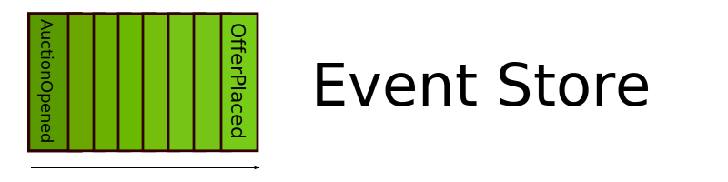
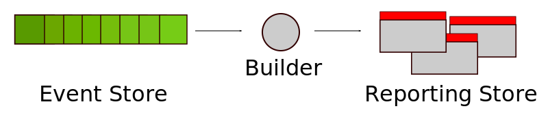

Robert Kawecki
"Event Sourcing: Towards Clarity"
2016-04-13
Event Sourcing
- Domain Events as state medium
- Capturing intent
- Append-only DB

Building applications
application = state + behavior
State mutation
- Only a result of events
- Deterministic
- In-memory
onAuctionOfferPlaced(event) {
var placedOffer = Offer.unflatten(event.eventPayload.offer);
this._offers.push(placedOffer);
}
Implementing behavior
- Domain-Driven Design
- Plain old OOP
- Logic in methods
placeOffer(buyer, amount, date) {
var offer = new Offer(buyer, amount, date);
if (!this._opened) {
throw new Error('The auction is not open for offers at this time');
}
this._stageEvent(new Event('AuctionOfferPlaced', { offer }));
}
Putting it together
- Single event repository
- Service layer
- Read side
var Auction = require('../Entities/Auction');
module.exports = function openAuction(params) {
return repository.invoke(Auction, params.ID, function(instance) {
instance.placeOffer(params.buyer, params.amount, new Date());
});
};
Read side: CQRS
- Denormalized
- Replicated
- Asynchronous

Pub-Sub
- Automation
- Integration by default
- Messaging format
event: {
eventType: 'AuctionOfferPlaced',
eventPayload: { offer: { ... } }
}, commit: {
sequenceID: '75525f22-381e-421b-8b9c-1f4623a32d56',
sequenceSlot: 4,
aggregateType: 'Auction'
}
Advantages
- Isomorphism
- Logic in plain sight
- Traceability
- Scalability